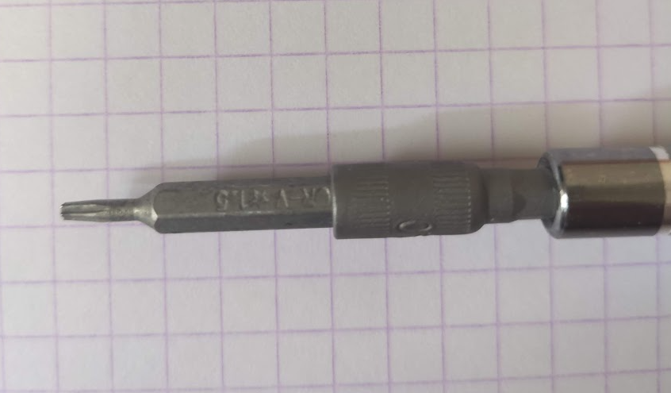
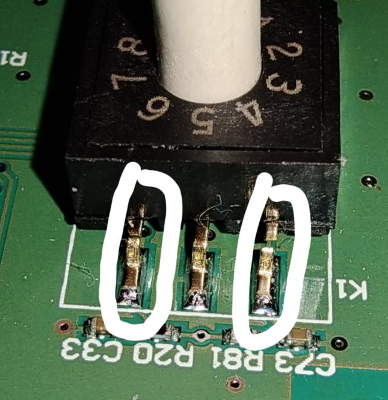
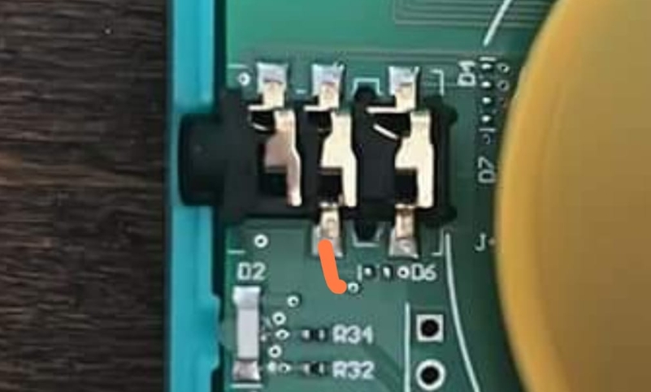
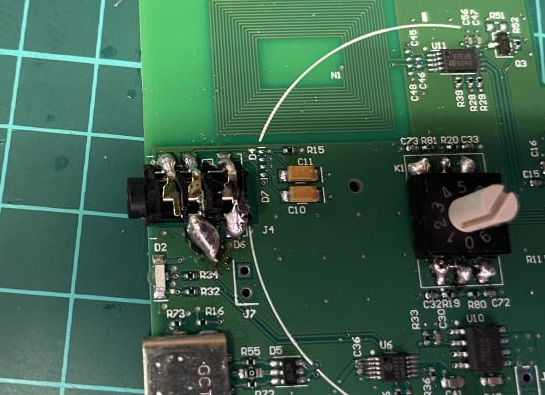

Les pannes fréquentes :
Pour démonter la Lunii v2 il vous faudra un tournevis de type TORX T6 (1,5mm) :

La molette de sélection ne fonctionne plus correctement : (Lunii V2)
La plupart du temps, soit une ou plusieurs pattes du composant ci dessous sont cassées, soit il est totalement arraché.

Il faudra alors souder avec de l'étain et un fer à souder les pattes cassées en faisant attention a ne pas brûler les composants proches.
Si le composant rotatif est vraiment HS il est possible d'en commander sur le site Aliexpress pour pas trop cher, par exemple ici : Lien
Le son ne fonctionne plus via le haut parleur mais fonctionne avec un casque : (Lunii V2)
Cette panne fréquente est souvent dû à un problème de piste cassée au niveau du connecteur casque (jack) et particulièrement celle ci dessous (en orange) :

Pour vérifier que cette piste est cassée prenez un trombone et reliez les 2 points du trait orange puis vérifier si ça fonctionne.
Si ça fonctionne, le plus simple est de faire un "pâté" d'étain avec un fer à souder comme ceci :
